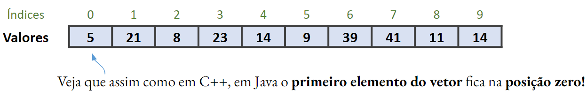

IPOO - Cap. 4 Agrupando Objetos
Aula 4.3 - Teórica
DAC - ICET - Universidade Federal de Lavras
08/09/2026
Este material é baseado no livro-texto da disciplina:
 .
.
Dessa vez não vou colocar os lembretes antes de começar a aula.
- A essa altura você já sabe né? Não preciso repetir.
Melhorando a estrutura: a classe Musica
Como vimos na aula passada, usar String para representar as músicas não é o ideal.
- Qualquer tocador de música comercial permite, por exemplo, buscar por título, artista, álbum, gênero, etc.
- Além de ter informações adicionais como a duração da música, por ex..
Um dos poderes da Orientação a Objetos é justamente permitir que entidades do mundo real possam ser representadas como objetos em nossos programas.
Como já sabemos como criar classes, com construtores, atributos e métodos,
- podemos criar uma classe
Musicaque represente as músicas.
Mas repare que, se quisermos ter todos os atributos mencionados para cada música (artista, título, gênero, álbum, etc.),
- precisaríamos pedir ao usuário para fornecer todas essas informações.
Para evitar esse trabalho, vamos ilustrar essa questão com um exemplo bem simples.
- Vamos aproveitar o fato de que os arquivos de música fornecidos têm o nome do artista e da música no nome,
- e usar uma classe auxiliar, chamada
LeitorDeMusica, - que vai procurar todas as músicas .mp3 que estão em uma pasta, e usar os nomes dos arquivos para criar objetos da classe
Musica.
- e usar uma classe auxiliar, chamada
O projeto organizador-musicas-v5 tem a implementação proposta, com a classe Musica.
- Obs.: não vamos avaliar a classe
LeitorDeMusicapois ela usa conceitos que ainda não vimos.
Leia o código da classe OrganizadorDeMusica.
- Quais são as principais alterações?
Você deve ter notado que as principais alterações são:
- A classe
OrganizadorDeMusicastem agora umArrayListde objetosMusicaem vez de umArrayListdeString. - Isso afeta diversos métodos que tínhamos implementado.
No método listarTodasAsMusicas, pedimos ao objeto Musica que retorne uma String contendo seus detalhes.
- Isso indica que estamos deixando a classe
Musicaresponsável por fornecer os detalhes a serem exibidos, como o título e o artista. - Este é um exemplo de design baseado em responsabilidade que veremos em mais detalhes no Cap. 7.
No método tocarMusica, precisamos agora obter o nome do arquivo do objeto Musica para passá-lo para o tocador.
Foram adicionados também códigos para buscar todas as músicas que estão na pasta principal do projeto.
Repare que ao utilizarmos a classe Musica alguns métodos ficaram um pouco mais complicados.
- Mas a estrutura do programa é agora muito melhor.
- A classe
Musicaé mais bem estruturada que uma simples String- e ainda nos permitiria guardar informações mais interessantes, como, por exemplo, uma imagem do artista ou do álbum de música, por exemplo.
Além disso, agora conseguimos evitar o problema mencionado na aula anterior,
- De querermos buscar todas as músicas que tenham a palavra
rendano título, - mas isso acabar retornando músicas de uma cantora chamada
Brenda.
No método apresentado a seguir esse problema é resolvido
- usando o fato de que a classe
Musicatem a informação do título separada do nome do arquivo.
/**
* Lista todas as músicas que tenham uma string passada
* em seu título
* @param stringDeBusca A string a ser procurada.
*/
public void buscarNoTitulo(String stringDeBusca)
{
for (Musica musica : musicas) {
String titulo = musica.obterTitulo();
if (titulo.contains(stringDeBusca)) {
System.out.println(musica.obterDetalhes());
}
}
}Exercício 1
Adicione um atributo numeroDeExecucoes à classe Musica. Implemente métodos para reiniciar a contagem (voltando para zero) e para incrementá-la em um. Altere também o método obterDetalhes para que inclua essa informação.
Em seguida, altere a classe OrganizadorDeMusicas de forma que toda vez que uma música for tocada, seja contabilizada mais uma execução dela.
Exercício 2
Você deve ter notado que se você tocar duas músicas sem parar a primeira, elas ficam tocando simultaneamente. E, claro, isso não é muito útil. Implemente as alterações necessárias para que uma música pare de tocar automaticamente quando uma outra música começa a tocar.
O tipo Iterator
Existe uma terceira forma de iterar sobre uma coleção que é uma espécie de um meio-termo entre for-each e while.
- Ela usa um loop
while, mas com um objeto iterador em vez de uma variável inteira índice para guardar a posição na lista.
Nós usamos uma classe Iterator e um método iterator.
- Repare a diferença pela letra
imaiúscula e minúscula, respectivamente.
A classe ArrayList tem um método iterator que retorna um objeto Iterator.
- Para usar a classe, precisamos importá-la do pacote
java.util.
Um iterador tem apenas quatro métodos, e usamos dois deles para iterar sobre uma coleção.
- O método
hasNext(temProximo) indica se há mais elementos na coleção. - E o método
next(proximo) retorna o próximo elemento.
O pseudocódigo abaixo mostra como geralmente utilizamos iteradores para percorrer uma coleção
// Obtemos o iterador da coleção
// - Como Iterator é uma classe genérica, precisamos
// informar um segundo tipo (que é o tipo dos
// elementos da coleção)
Iterator<TipoDoElemento> it = minhaColecao.iterator();
// Enquanto há elementos a processar
while (it.hasNext()) {
// Chamamos it.next() para obter o próximo elemento
// Fazemos alguma coisa com o elemento
}Podemos fazer então uma terceira versão do método que lista todas as músicas, agora usando um Iterator.
Quais são as diferenças para as versões anteriores do método listarTodosOsArquivos?
Quais são as diferenças para as versões anteriores do método listarTodosOsArquivos?
- Nós usamos um loop
while, mas não precisamos nos preocupar com uma variável de índice. - Repare que o principal ponto a entender é que o método
next, além de retornar o próximo elemento, passa o iterador para frente. - Portanto, chamadas sucessivas do método
nextretornam sempre elementos diferentes.- Mas cuidado, se terminarem os elementos, e o método
nextfor chamado sem antes verificar sehasNextretornatrue, ocorrerá um erro no programa.
- Mas cuidado, se terminarem os elementos, e o método
Conceito
Um iterador é um objeto que permite iterar sobre todos os elementos de uma coleção.
Realmente, o que fizemos até agora não traz vantagens.
- Mas há duas situações nas quais um
Iteratoré muito útil:
- Para coleções cujo acesso por posição não é possível, ou muito lento.
- Para a remoção de vários elementos de uma coleção.
Acesso por índice vs. iteradores
Quando estamos usando um ArrayList, não faz nenhuma diferença utilizar while acessando por índice ou com iteradores.
- Mas nem toda coleção funciona assim.
- Veremos coleções mais adiante que não permitem acesso por posição.
- Ou esse acesso seria muito lento.
- E, portanto, seria inviável utilizar
whileacessando por índice.
Acesso por índice vs. iteradores
A solução de utilizar while com um Iterator funciona para todas as coleções da biblioteca de classes do Java.
- E, portanto, é um padrão de código que usaremos novamente mais adiante.
Removendo elementos de uma coleção
Remover elementos traz consequências importantes quando estamos iterando uma coleção.
- Suponha, por exemplo, que não estamos mais interessados em um artista e queremos remover todas as suas músicas.
- Pode parecer bem simples implementar um método para isso, seguindo pseudocódigo abaixo.
Apesar dessa forma parecer perfeitamente razoável, não é possível remover elementos usando um loop for-each.
para cada música na colecao {
se musica.obterArtista() é o artista que não queremos mais {
colecao.remove(musica);
}
}Apesar dessa forma parecer perfeitamente razoável, não é possível remover elementos usando um loop for-each.
- Se você tentar fazer isso, ocorrerá um erro no programa (
ConcurrentModificationException). - Isso ocorre porque a remoção causa uma confusão sobre qual seria o próximo elemento nesta situação.
A solução para usar isso é usar um Iterator para remover elementos de uma coleção.
- Além dos métodos
hasNextenext, a classe tem um métodoremove. - O método remove o elemento que foi retornado pela última chamada do método
next.
O trecho de código abaixo mostra como remover as músicas de um artista da coleção de músicas.
- Repare que chamamos o método
removedo iterador e não doArrayList.
Há outras formas de remover elementos de uma coleção.
- Por ex.: fazer um loop para encontrar a posição de um elemento.
- E depois do loop remover o elemento daquela posição.
Mas veja que há desvantagens:
- Como já mencionamos, nem toda coleção permite acessar elementos por posição, ou esse acesso é lento.
- Além disso, com iterador podemos fazer a remoção já dentro do loop, sem precisar fazer uma operação separada.
Portanto, é uma boa ideia saber como remover elementos de uma coleção usando um objeto Iterator. :)
Exercício 3
Implemente um método na classe OrganizadorDeMusicas que receba uma string por parâmetro e remova todas as músicas cujos títulos tenham aquela string.
Coleções de tamanho fixo
Apesar de coleções de tamanho flexível serem úteis na maioria dos casos,
- Há situações nas quais sabemos quantos elementos uma coleção terá durante todo o tempo de execução de um programa.
- Nesses casos, é melhor utilizar uma coleção de tamanho fixo: um vetor (ou array).
Mas qual a vantagem de usarmos vetores?
- É que o acesso por índice (posição) é geralmente mais eficiente do que em uma coleção de tamanho flexível, como a
ArrayList. - Outra vantagem é que, em Java, podemos ter vetores de elementos que são tipos primitivos.
- Enquanto
ArrayList, por exemplo, permite guardar apenas objetos. - Apesar de que, como veremos no próximo capítulo, há uma forma de lidarmos com isso usando wrappers (classes empacotadoras).
- Enquanto
Um vetor é um grupo de variáveis que contém elementos de um mesmo tipo.
- Em Java, vetores são considerados objetos, portanto, são considerados tipos por referência.
- Como já mencionado, os elementos de um vetor podem ser de tipos primitivos ou de tipos por referência (objetos).
Exemplo de um vetor:

Podemos declarar um vetor em Java, utilizando uma das seguintes formas:
Recomendo usar a primeira opção por ter melhor legibilidade.
Como os demais objetos, os vetores são criados por meio da palavra-chave new:
Há ainda outras duas formas alternativas de se instanciar um vetor.
Em C++ um vetor criado, mas não inicializado, pode conter lixo de memória.
- Mas em Java, vale a regra de inicialização igual a dos atributos.
- Vetor de tipos numéricos tem todos os elementos inicializados com zero.
- Vetor de booleanos tem todos os elementos inicializados com
false. - Vetor de objetos tem todos os elementos inicializados com
null.
O loop for
Geralmente utilizamos um loop for para percorrer os elementos de um vetor.
- A sintaxe do loop
forem Java é igual à do C++. - Usamos o atributo
length, que é constante e público, e retorna o tamanho do vetor.
O loop for
Como podemos então exibir todos os elementos de um vetor de inteiros chamado vet?
Usando vetores em métodos
Podemos passar vetores como parâmetro de métodos.
- A passagem é por referência, ou seja, estamos passando o ponteiro para o vetor.
- Portanto, se o método alterar o vetor, ele estará alterando o vetor original passado por parâmetro
Usando vetores em métodos
Podemos também criar métodos que retornam vetores.
Vetores de objetos
Nós podemos também criar vetores para guardar objetos.
- Suponha, por exemplo, que queiramos poder criar e trabalhar com vários objetos de uma classe
Carro.
Vetores de objetos
Nós podemos então acessar cada objeto Carro no vetor, a partir de sua posição.
Vetores de objetos
Repare que a condição (if) da linha 2 é muito importante:
- pois caso alguma posição do vetor não tenha sido inicializada, seu valor é
null. - E poderia então ocorrer um erro (
NullPointerException) ao tentar chamar o métodoobterNome.
Usando for-each com vetores
Nós também podemos usar um loop for-each para percorrer os elementos de um vetor.
Este exemplo nos permite enfatizar uma das vantagens do loop for-each:
- Repare que esse código seria exatamente igual se a variável
carrosfosse umArrayListem vez de um vetor. - Já na opção anterior, usando loop for tradicional, os códigos seriam diferentes.
- Primeiro porque consultamos o tamanho de um vetor usando o atributo
lengthe de umArrayListusando o métodosize. - E segundo que acessamos um elemento por posição em um vetor usando
[i]e em umArrayListusandoget(i).
- Primeiro porque consultamos o tamanho de um vetor usando o atributo
Vetores vs. ArrayList
Agora que conhecemos tanto vetores quanto ArrayList, qual deles devemos utilizar?
- É melhor usar
ArrayListse o número de elementos pode ser alterado durante a execução do programa.- Ou se você não sabe, antes de criar a coleção, quantos elementos serão usados.
- Seria melhor usar um vetor quando o número de elementos é pré-determinado.
- E a eficiência de acesso por posição é muito importante.
Na prática acabamos usando ArrayList em muitas situações mesmo quando temos uma quantidade fixa de elementos.
- Mas, de toda forma, precisamos saber utilizar vetores pois é comum precisarmos usar métodos de classes da biblioteca do Java (ou de terceiros) que trabalham com vetores.